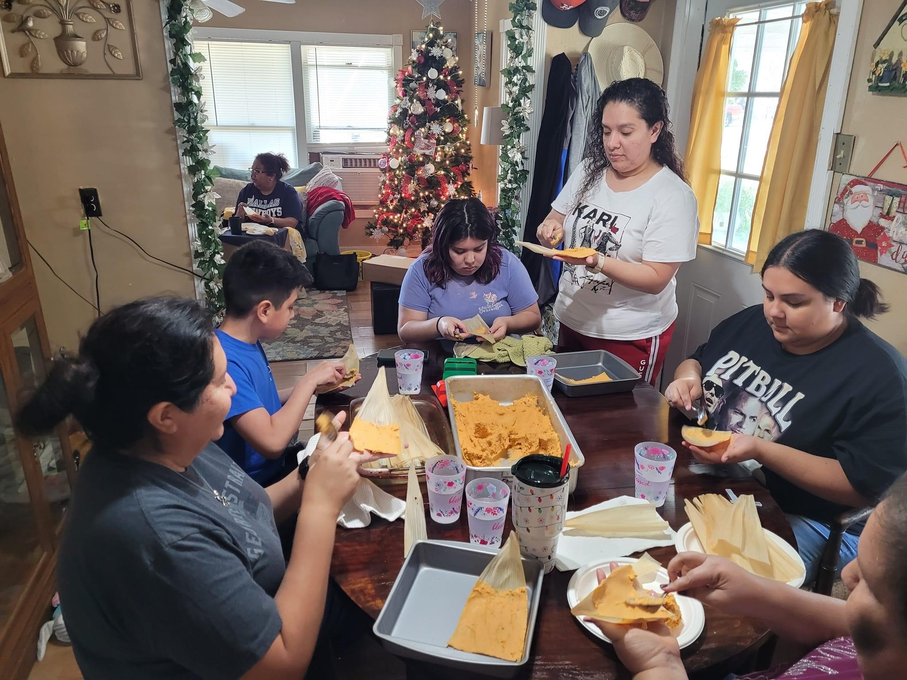

I currently live in Corpus Christi, TX after living in Houston, TX for 14 years.
I am the youngest of 13 siblings and have nieces and nephews that are older than me.
I work in GIS (Geographic Information Science), which involves displaying data spatially.
Specifically showing data on maps, which I learned about in college and got a degree in. I enjoy
how technology-driven this field is and look forward to learning more. Here is a link to one of the major software developers of GIS software: ESRI homepage
Interests
I enjoy watching documentaries and true-crime shows. Ex: 20/20, 48 Hours Mystery, Narcos, etc.
I love to travel and look forward to traveling again. The countries I've traveled to are Peru, Thailand, Mexico,
and I look forward to traveling to Europe next.
I enjoy spending time with family and friends since I was away from home for 14 years.
I also enjoy cooking and trying out new recipes with family and friends.
Family
As tradition our family makes tamales every year and we make sure we teach the younger kids as well. That way we can keep this tradition alive. It was great seeing my younger nieces and nephews learning how to spread the masa on the corn husks. They struggled at first but with the help of the older adults they learned and we got to enjoy some good laughs with everyone.

Making tamales with family this past Christmas.